Creating target denominator populations
Source:vignettes/a03_Creating_target_denominator_populations.Rmd
a03_Creating_target_denominator_populations.Rmd
library(IncidencePrevalence)
library(CDMConnector)
library(IncidencePrevalence)
library(dplyr)
library(tidyr)
library(ggplot2)Using generateDenominatorCohortSet() with a target cohort
As seen in the previous vignette,
generateDenominatorCohortSet() can be used to generate
denominator populations based on all individuals in the database with
individuals included once they satisfy criteria. However, in some case
we might want to define a denominator population within a specific
population of interest, for example people diagnosed with a condition of
interest. The function generateTargetDenominatorCohortSet()
provides functionality for this.
To provide an example its use, let´s generate 5 example patients.
Here we generate a simulated target cohort table with 5 individuals and 2 different target cohorts to illustrate the following examples. Note, some of the individuals in the database are in an acute asthma cohort.
personTable <- tibble(
person_id = c("1", "2", "3", "4", "5"),
gender_concept_id = c(rep("8507", 2), rep("8532", 3)),
year_of_birth = 2000,
month_of_birth = 06,
day_of_birth = 01
)
observationPeriodTable <- tibble(
observation_period_id = "1",
person_id = c("1", "2", "3", "4", "5"),
observation_period_start_date = c(
as.Date("2010-12-19"),
as.Date("2005-04-01"),
as.Date("2009-04-10"),
as.Date("2010-08-20"),
as.Date("2010-01-01")
),
observation_period_end_date = c(
as.Date("2011-06-19"),
as.Date("2005-11-29"),
as.Date("2016-01-02"),
as.Date("2011-12-11"),
as.Date("2015-06-01")
)
)
acute_asthma <- tibble(
cohort_definition_id = rep("1", 5),
subject_id = c("3", "3", "5", "5", "2"),
cohort_start_date = c(
as.Date("2011-01-01"),
as.Date("2015-06-01"),
as.Date("2014-10-01"),
as.Date("2010-06-01"),
as.Date("2005-08-20")
),
cohort_end_date = c(
as.Date("2013-01-01"),
as.Date("2015-12-31"),
as.Date("2015-04-01"),
as.Date("2010-06-01"),
as.Date("2005-09-20")
)
)
# mock database
cdm <- mockIncidencePrevalence(
personTable = personTable,
observationPeriodTable = observationPeriodTable,
targetCohortTable = acute_asthma
)As we´ve already seen, we can get a denominator population without including any particular subset like so
cdm <- generateDenominatorCohortSet(
cdm = cdm,
name = "denominator"
)
cdm$denominator
#> # Source: table<denominator> [?? x 4]
#> # Database: DuckDB v1.3.2 [unknown@Linux 6.11.0-1018-azure:R 4.5.1/:memory:]
#> cohort_definition_id subject_id cohort_start_date cohort_end_date
#> <int> <chr> <date> <date>
#> 1 1 1 2010-12-19 2011-06-19
#> 2 1 2 2005-04-01 2005-11-29
#> 3 1 3 2009-04-10 2016-01-02
#> 4 1 4 2010-08-20 2011-12-11
#> 5 1 5 2010-01-01 2015-06-01As we did not specify any study start and end date, the cohort start and end date of our 5 patients correspond to the same registered as observation period.
cdm$denominator %>%
filter(subject_id %in% c("1", "2", "3", "4", "5")) %>%
collect() %>%
pivot_longer(cols = c(
"cohort_start_date",
"cohort_end_date"
)) %>%
ggplot() +
geom_point(aes(x = value, y = subject_id)) +
geom_line(aes(x = value, y = subject_id)) +
theme_minimal() +
xlab("Year")
But if we use generateTargetDenominatorCohortSet() to
create a denominator cohort among the individuals in the acute asthma
cohort.
cdm <- generateTargetDenominatorCohortSet(
cdm = cdm,
name = "denominator_acute_asthma",
targetCohortTable = "target"
)We can see that persons “3” and “5” experienced this condition in two different occasions and contribute time to the denominator population twice, while person “2” contributes one period of time at risk.
cdm$denominator_acute_asthma %>%
collect() %>%
mutate(row = row_number()) %>%
pivot_longer(cols = c(
"cohort_start_date",
"cohort_end_date"
)) %>%
ggplot(aes(group = row)) +
geom_point(aes(x = value, y = subject_id)) +
geom_line(aes(x = value, y = subject_id)) +
theme_minimal() +
xlab("Year")
Applying cohort restrictions
We can use PatientProfiles to see demographics at time of entry to the target cohort.
cdm$target |>
PatientProfiles::addDemographics(indexDate = "cohort_start_date")
#> # Source: table<og_001_1753253809> [?? x 8]
#> # Database: DuckDB v1.3.2 [unknown@Linux 6.11.0-1018-azure:R 4.5.1/:memory:]
#> cohort_definition_id subject_id cohort_start_date cohort_end_date age sex
#> <int> <chr> <date> <date> <int> <chr>
#> 1 1 2 2005-08-20 2005-09-20 5 Male
#> 2 1 3 2015-06-01 2015-12-31 15 Female
#> 3 1 5 2010-06-01 2010-06-01 10 Female
#> 4 1 3 2011-01-01 2013-01-01 10 Female
#> 5 1 5 2014-10-01 2015-04-01 14 Female
#> # ℹ 2 more variables: prior_observation <int>, future_observation <int>Restrictions based on age, sex, and prior observation, and calendar
dates can again be applied like with
generateDenominatorCohortSet(). However, now we have
additional considerations on how these restrictions are implemented. In
particular, whether requirements must be fulfilled on the date of target
cohort entry or whether we allow people to contribute time once they
satisfy time-varying criteria.
This choice is implemented using the requirementsAtEntry
argument. When this is set to TRUE individuals must satisfy the age and
prior observation requirements on their target cohort entry date. In the
case below we can see that persons “3” and “5” satisfy the sex and age
requirements on their target cohort start dates, although one of the
cohort entries is excluded for patient “3” and “5” as they were below
the minimum age at their date of cohort entry.
cdm <- generateTargetDenominatorCohortSet(
cdm = cdm,
name = "denominator_acute_asthma_incident",
ageGroup = list(c(11, 15)),
sex = "Female",
daysPriorObservation = 0,
targetCohortTable = "target",
requirementsAtEntry = TRUE
)
cdm$denominator_acute_asthma_incident %>%
collect() %>%
mutate(row = row_number()) %>%
pivot_longer(cols = c(
"cohort_start_date",
"cohort_end_date"
)) %>%
ggplot(aes(group = row)) +
geom_point(aes(x = value, y = subject_id)) +
geom_line(aes(x = value, y = subject_id)) +
theme_minimal() +
xlab("Year")If we change requirementsAtEntry to FALSE individuals
can now contribute once they the various criteria. Now we can see that
we have included an extra period of time of risk for patient “3”. This
is because although they were younger than 11 at their cohort entry, we
now allow them to contribute time once they have reached the age of
11.
cdm <- generateTargetDenominatorCohortSet(
cdm = cdm,
name = "denominator_acute_asthma_prevalent",
ageGroup = list(c(11, 15)),
sex = "Female",
daysPriorObservation = 0,
targetCohortTable = "target",
requirementsAtEntry = FALSE
)
cdm$denominator_acute_asthma_prevalent %>%
collect() %>%
mutate(row = row_number()) %>%
pivot_longer(cols = c(
"cohort_start_date",
"cohort_end_date"
)) %>%
ggplot(aes(group = row)) +
geom_point(aes(x = value, y = subject_id)) +
geom_line(aes(x = value, y = subject_id)) +
theme_minimal() +
xlab("Year")
Similarly, let’s say we are considering multiple, non-overlapping, age groups. Setting requirementsAtEntry to TRUE will mean that an individual will only contribute a given target entry to one of these - the one where they are that age on the day of target cohort entry. However, setting requirementsAtEntry to FALSE would allow an individual to graduate from one age group to another.
As with age, the same will apply when specifying time varying
elements such as date criteria and prior observation requirements. For
example, if we specify dates using cohortDateRange then if
requirementsAtEntry is TRUE an individual must enter the target cohort
during the date range,
Specifying time at risk
We can also enforce a time at risk for people to contribute to the
denominator. For instance, we might only want to take into account
events for people in the target denominator cohort on their first month
after cohort entry. This can be achieved by adding the input parameter
timeAtRisk = c(0,30) when computing the denominator, before
any incidence or prevalence calculations.
cdm <- generateTargetDenominatorCohortSet(
cdm = cdm,
name = "denominator_acute_asthma_2",
ageGroup = list(c(11, 15)),
sex = "Female",
daysPriorObservation = 0,
targetCohortTable = "target",
timeAtRisk = c(0, 30)
)
cdm$denominator_acute_asthma_2 %>%
collect() %>%
mutate(row = row_number()) %>%
pivot_longer(cols = c(
"cohort_start_date",
"cohort_end_date"
)) %>%
ggplot(aes(group = row)) +
geom_point(aes(x = value, y = subject_id)) +
geom_line(aes(x = value, y = subject_id)) +
theme_minimal() +
xlab("Year")Note that this parameter allows the user to input different time at
risk values in the same function call. Therefore, if we ask for
timeAtRisk = list(c(0, 30), c(31, 60)), we will get a
denominator cohort of people contributing time up to 30 days following
cohort entry, and another one with time from 31 days following cohort
entry to 60 days.
cdm <- generateTargetDenominatorCohortSet(
cdm = cdm,
name = "denominator_acute_asthma_3",
ageGroup = list(c(11, 15)),
sex = "Female",
daysPriorObservation = 0,
targetCohortTable = "target",
timeAtRisk = list(c(0, 30), c(31, 60))
)
cdm$denominator_acute_asthma_3 %>%
collect() %>%
dplyr::left_join(
attr(cdm$denominator_acute_asthma_3, "cohort_set") %>%
dplyr::select(c(
"cohort_definition_id",
"time_at_risk"
)),
by = "cohort_definition_id",
copy = TRUE
) %>%
mutate(row = row_number()) %>%
pivot_longer(cols = c(
"cohort_start_date",
"cohort_end_date"
)) %>%
ggplot(aes(group = row, colour = time_at_risk)) +
geom_point(aes(x = value, y = subject_id)) +
geom_line(aes(x = value, y = subject_id)) +
theme_minimal() +
xlab("Year")Additionally, observe that this parameter allows us to control the
follow-up of these individuals after cohort entry for the denominator
cohort, but this is inherently linked to their cohort exit and the end
of their observation period. Hence, if we define the target cohort so
that individuals are only followed for one month, and we now require
timeAtRisk = c(0,90), we will get the same denominator
cohort as in the previous example.
cdm$target_2 <- cdm$target |>
dplyr::mutate(dif = cohort_end_date - cohort_start_date) |>
dplyr::mutate(cohort_end_date = dplyr::if_else(
dif > 30,
clock::add_days(cohort_start_date, 30),
cohort_end_date
)) |>
dplyr::select(-"dif") |>
dplyr::compute(temporary = FALSE, name = "target_2")
cdm <- generateTargetDenominatorCohortSet(
cdm = cdm,
name = "denominator_acute_asthma_4",
ageGroup = list(c(11, 15)),
sex = "Female",
daysPriorObservation = 0,
targetCohortTable = "target_2",
timeAtRisk = c(0, 90)
)
cdm$denominator_acute_asthma_4 %>%
collect() %>%
mutate(row = row_number()) %>%
pivot_longer(cols = c(
"cohort_start_date",
"cohort_end_date"
)) %>%
ggplot(aes(group = row)) +
geom_point(aes(x = value, y = subject_id)) +
geom_line(aes(x = value, y = subject_id)) +
theme_minimal() +
xlab("Year")Note that time at risk will always be related to target cohort entry.
If we set requirementsAtEntry to FALSE and an individual
contributes time from 31 days after their target entry date, they
wouldn’t contribute any time if timeAtRisk was set to c(0, 30).